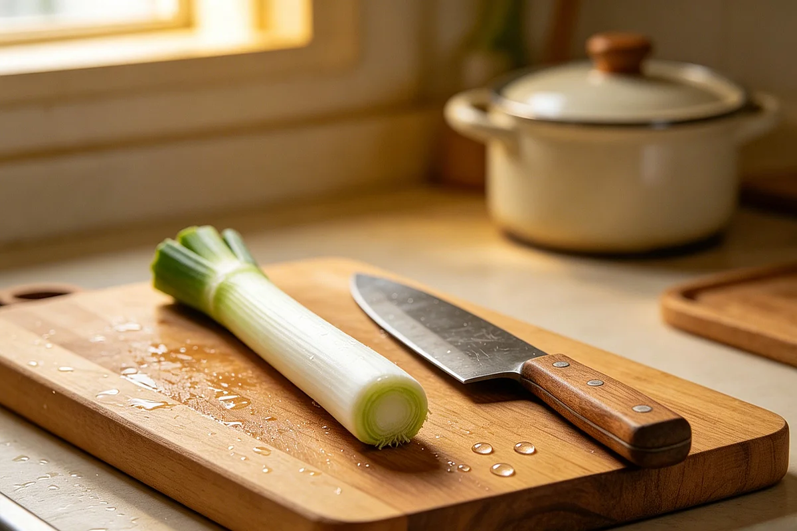

Scallion White Root Tea: What My Grandmother Reached for When a Cold Was Coming
Before anyone in our house took medicine for a cold, my grandmother would walk into the kitchen, pull scallions from the basket, and with one decisive snap of her knife trim the white roots off. Twenty minutes later you'd be holding a cup of something pale and faintly onion-scented, and you'd drink it because you trusted her more than you trusted a pharmacy.
Chinese home kitchens almost always have scallions. They sit in a basket on the counter or in a jar of water on the windowsill, their white roots still attached, ready to be sliced into scrambled eggs or tossed into a wok of stir-fried noodles. What most people outside China don't know is that the white root end — the part many cooks trim and throw away — has its own long history as a folk remedy for what my grandmother called "the wind sneaking in."

In plain terms: the very beginning of a cold. That moment when your throat feels strange, your head feels heavy, and you know something is arriving but hasn't landed yet. In Chinese folk language, this stage is often described as the body being "invaded by cold wind." The remedy — if you can call it that — is to drive the cold back out by making the body warm from the inside, fast.
Where the habit comes from
Scallion white root — cong bai (葱白) in Chinese — appears in classical medical texts as far back as the Shennong Ben Cao Jing, where it's described as a common kitchen ingredient sometimes used to "dispel cold." In folk practice, this idea took a much simpler form: when someone was coming down with something, you boiled scallion roots in water, added a slice or two of ginger, and had them drink it hot. Then you put them to bed with an extra blanket and told them to sweat it out.
My grandfather, who recited folk sayings the way other people recited prayers, used to say: "Hot water and a good sweat are cheaper than any doctor." That was the kitchen's philosophy in one sentence — try the simplest thing first, and if it doesn't work, you can always go to the clinic tomorrow.
Nobody called this medicine. It was just what you did — the domestic equivalent of putting on a scarf when it's windy. If it worked, the cold would break overnight. If it didn't, you'd go to the doctor the next day. The tea was never presented as a guarantee, only as a first resort.
It's often paired with fresh ginger tea — my grandfather's summer ritual — but the two drinks serve different moments. Ginger tea is for everyday warmth and digestion. Scallion root tea is for the specific moment when you feel a cold approaching. It's not a habit. It's a response.
How my grandmother made it
She'd pull three or four scallions from the basket — always the ones with the thickest white roots, the ones that had been sitting there longest. A quick, sure snap of her knife, and the roots were off. She'd rinse them under the tap and drop them into a small pot of water. Sometimes she'd add two thin slices of ginger. Sometimes she'd add nothing. She'd bring the water to a boil, then let it simmer while she did something else — folded laundry, answered the phone, stood at the kitchen door watching the cat.
When the kitchen smelled faintly of onions, she'd pour the liquid into a cup — straining out the roots through the gap between the pot and its lid, never using a strainer, never fussing — and hand it to you with one instruction: "Drink it hot, then go to bed." The taste was mild, slightly sweet from the long simmer, with none of the sharpness of raw scallion. It tasted like warm water that had been thinking about soup.
Then came the second instruction, which was really the whole point: you got under the heaviest blanket in the house — the thick cotton one with the faded floral pattern — and you stayed there. If you sweated, good. If you fell asleep, better. By morning, more often than not, the cold had backed off. Whether it was the tea, the blanket, or simply the act of stopping and resting when your body asked you to — that was never the question. The question was irrelevant. The habit worked, or it didn't, and either way you'd had a cup of something warm and an evening of being looked after.
Why scallion root, specifically
In Chinese kitchen folklore, the white part of the scallion is described as "warm" — the same word used to describe ginger, cinnamon, and other foods that make you feel heated from the inside. The green tops are considered "cooler" and milder, which is why the folk practice specifically calls for the white root end. Whether there's science behind this or not is beside the point — this is folk taxonomy, not pharmacology. It's a way of thinking about food that belongs to the kitchen, not the clinic.
The pairing with ginger makes intuitive sense in this framework: scallion white root is said to reach the surface of the body (the skin, the sweat glands), while ginger is said to warm the interior (the stomach, the core). Together, in folk logic, they push the cold out from both directions. The heavy blanket on top is not an afterthought — it's the third ingredient.
Comfort and safety
Very hot liquids can burn your mouth and throat. Let the tea cool enough that you can sip without flinching. This is a folk food tradition, not a replacement for medical care. If you have a fever, a persistent cough, difficulty breathing, or any symptoms that worry you, go to a doctor — don't wait for scallion tea to fix it. My grandmother would have told you the same thing. The tea was for the very beginning of a cold, the moment of "maybe something is coming" — not for anything that had already settled in.
Anyone with allium sensitivities (onion, garlic, scallion) should obviously skip this one. If the taste makes you gag, drink plain hot water instead and get under the blanket anyway. The warmth and the rest are the part that matters.
The Shennong Ben Cao Jing records scallion white root as a kitchen ingredient occasionally used to "release the exterior" — a classical Chinese description of helping the body push out what had just entered. The language belongs to its time. I quote it not as evidence but as atmosphere: this simple kitchen remedy has been passed down for centuries, through texts and through hands, not because it was proven but because it was practiced.
Referenced from Shennong Ben Cao Jing (Divine Farmer's Materia Medica)